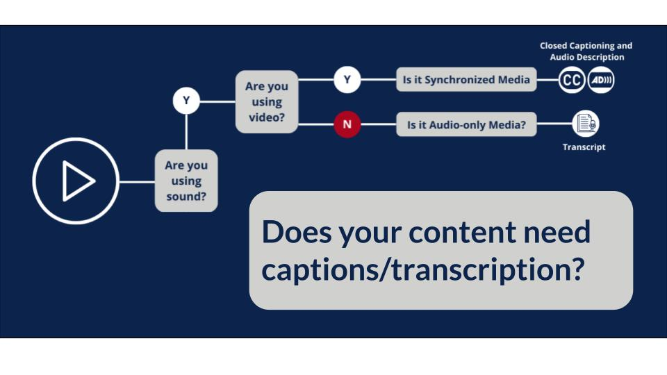

Transcripts are fundamentally important in ensuring that every person who interacts with the content has equal access to engage with the digital media in a meaningful way. When transcripts are not provided, those with disabilities are forced to work around obstacles if they want to use the content. In order to create accessible transcripts that fulfill their function, it helps to understand the various groups that benefit from the feature.

Most video and audio media should have closed captions, but it is also helpful to include transcripts for lengthier content. This makes it easier for users who cannot watch or listen to the content in full or who prefer written content, as mentioned in the section on basic transcripts.
Those with sensory and/or intellectual disabilities often benefit the most from the inclusion of transcripts. Sensory disabilities can include visual and/or auditory processing impairments.
People with visual impairments can use a screen reader to follow along with the video by having the transcript read aloud to them.
People with auditory impairments can read the transcript to follow along with the video.
People with intellectual disabilities can use another format to display the content of the video, allowing them to explore and process the content at their own pace.
People have a range of abilities, and these are only a select few examples of people who can benefit from transcripts. Even if you don’t identify as having a disability, transcripts can be helpful if you forgot your headphones or need to find direct quotes for an assignment! That’s the designing with accessibility in mind; everyone can find use from these helpful features.
Intentionally including transcripts is a form of universal design, which makes the design of products and environments usable by all people without the need for adaptation. When design features such as transcripts are included from the initial stages of the process, all customers and designers benefit alike.
Transcripts are essential for ensuring that everyone has equal ability to engage with digital content and are a major step in reaching universal design as a norm.